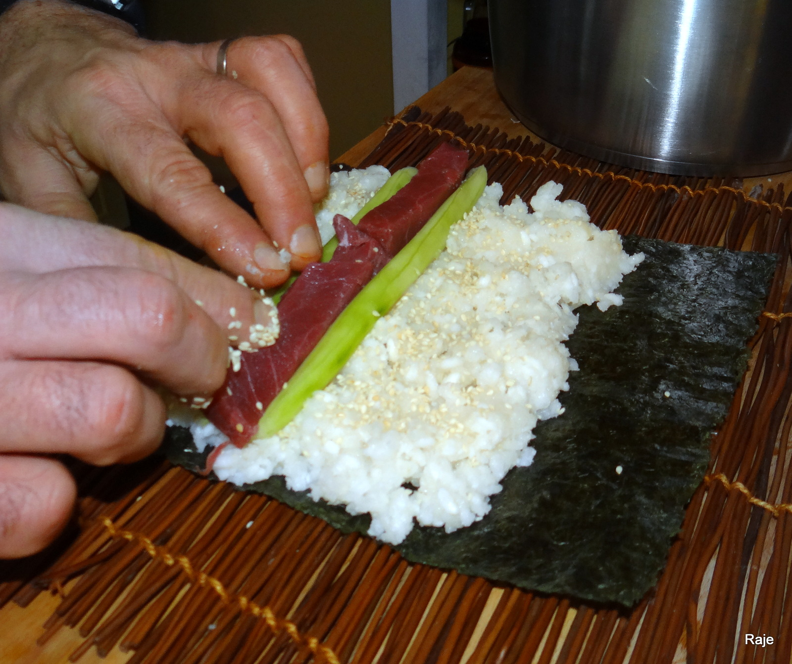

Sushi Laikas
2020.10.29 08:53
Meniu Dienos pietūs Sushi rinkiniai Susisiekti Kaip mus rasti
Nauji skoniai
Ilgametė patirtis
Previous Next
Maloniai kviečiame apsilankyti
Pirmadieniais - Ketvirtadieniais 11:00-21:00
Penktadieniais - Šeštadieniais 11:00-22:00
Sekmadieniais 11:00-21:00
Nori Sushi Ura Maki Nigiri Sushi Užkandžiai Kiniškas Meniu DesertasNori Sushi
1. Su agurku
8 vnt.
2.90€
2. Su avokadu
8 vnt.
2.90€
3. Su krabų mėsa
8 vnt.
2.90€
4. Su lašiša
8 vnt.
3.40€
5. Su agurku ir lašiša
8 vnt.
3.40€
6. Su tunu ir avokadu
8 vnt.
3.40€
Ura Maki
7. Lašiša, avokadas, juodi ikrai, filadelfija sūris
8 vnt.
5.50€
8. Krabų mėsa, avokadas, oranžiniai ikrai, filadelfia sūris
8 vnt.
5.50€
9. Krabų mėsa, lašiša, avokadas, žali ikrai, filadelfija sūris
8 vnt.
5.50€
10. Mangas, agurkas, avokadas, žali ikrai, filadelfija
8 vnt.
5.40€
11. Paprika, baklažanas, baltas ir juodas sezamas, filadelfija sūris
8 vnt.
5.40€
12. Konservuotas tunas, krabų mėsa, juodi ikrai, karai padažas
8 vnt.
5.40€
13. Jūros žolė wakame, agurkas, baltas sezamas
8 vnt.
5.40€
14. Lašiša, tempūra, agurkas, baltas ir juodas sezamas
8 vnt.
5.50€
15. Kepta krevetė, agurkas, baltas ir juodas sezamas
8 vnt.
6.40€
16. Kepta krevetė, agurkas, oranžiniai ikrai, filadelfija sūris
8 vnt.
6.40€
17. Ebi krevetė, kremas, ungurys, avokadas, teriyaki
8 vnt.
6.40€
18. Ungurys, agurkas, avokadas, juodas sezamas, teriyaki
8 vnt.
6.40€
19. Ungurys, avokadas, kremas, žali ikrai, teriyaki
8 vnt.
6.40€
20. Tunas, agurkas, tempūra
8 vnt.
6.40€
20+ Rausvasis Tunas, agurkas, avokadas, filadelfija, karai padažas
8 vnt.
6.40€
21. Kepta lašiša, agurkas, karai padažas, juodas ir baltas sezamas
8 vnt.
6.40€
22. Lašiša, agurkas, tempūra, žali ikrai, filadelfija sūris
10 vnt.
6.40€
23. Krabų mėsa, paprika, agurkas, baklažanas, filadelfija sūri
10 vnt.
6.40€
24. Minkštakiautis krabas, tigrinė krevetė, filadelfija sūris, avokadas, tempūra, oranžiniai ikrai, sezamas, teriyaki padažas
8 vnt.
7.90€
25. Lašiša, avokadas, filadelfija sūris, tempūra, teriyaki padažas, sezamas
8 vnt.
6.40€
26. Lydytas sūrelis, tigrinė krevetė, agurkas, žali ikrai
8 vnt.
6.40€
27. Su vištiena, agurku, tempura, „Philadelphia“ sūriu, juodu ir baltu sezamu
8 vnt.
5.30€
Nigiri Sushi
27. "Nigiri" su lašiša
1 vnt.
1.90€
28. "Nigiri" su tunu
1 vnt.
1.90€
29. "Nigiri" su Ebi krevete
1 vnt.
1.90€
30. "Nigiri" su unguriu
1 vnt.
2.30€
Užkandžiai
Koldūnai su Vištiena ir Baravykais
6 vnt.
3.70€
Koldūnai su Kiauliena
12 vnt.
3.70€
Koldūnai su Daržovėmis
12 vnt.
3.70€
"Spring Rolls"
12 vnt.
3.70€
Keptos tigrinės Krevetės
6 vnt.
5.60€
"Bulvytės fri"
2.90
Keptos vištienos blauzdelės + bulvytės fri + cola (0.33l)
6.30€
Kepti vištienos sparneliai + bulvytės fri + cola (0.33l)
6.30€
Galimi padažai kartu su užkandžiais:
Vasabio
Karai
Pikantiškas
Saldžiarūgštis (Sweet Chilli)
Kiniškas Meniu
Vyšnių formos vištiena
5.50€
Aštri vištiena su juodaisiais kiniškais grybais
5.50€
Vištiena su saldžiarūgsčiu padažu (Sweet Chilli)
5.50€
Kiniškos salotos
5.50€
Žuvies skonio baklažanas su padažu
6.40€
Vištienos sriuba su baltaisiais kiniškais grybais
2.90€
Saldžiai aštri menkė
5.50€
Gong Bao vištiena
5.50€
Makaronai su vištiena ir kokoso pieno padažu
5.50€
Makaronai su lašiša, krevetėmis ir jūros žole (wakame)
5.90€
Pikantiški makaronai su vištiena ir pikantišku padažu
5.90€
Aštrūs makaronai su jūros gėrybėmis ir imbieru
5.90€
Makaronai su vištiena ir daržovėmis
5.90€
Saldžiarūgštė menkė su daržovėmis
5.90€
Lašiša su bambukais
5.90€
Galimi garnyrai kartu su kinišku meniu:
ryžiai 0.70€
ryžiai su kiaušiniais 1.30€
salotos 0.70€
Ledai
0.99€ maža porcija
1.99€ didelė porcija
Susisiekite su mumis Kaune telefonu:
Šilainiuose: +37063996592
Centre: +37066402318
el. paštu:
info@sushilaikas.lt
mus taip pat galima rasti:
Sushi Laikas
Dienos pietūs tik 4.99€
Dienos pietūs be sriubos 4.49€
Dienos sriuba,
Aštri vištiena,
Garnyras *
(Salotos, ryžiai)
Dienos sriuba,
Gong Bao vištiena,
Garnyras *
(Salotos, ryžiai)
Dienos sriuba,
Vyšnių formos vištiena,
Garnyras *
(Salotos, ryžiai)
Dienos sriuba,
Saldžiai aštri menkė,
Garnyras *
(Salotos, ryžiai)
Dienos sriuba,
Makaronai su vištiena ir daržovėmis
Dienos sriuba,
Sushi- lašiša, agurkas, majonezas, sezamas
Dienos sriuba,
Sushi- lašiša, agurkas, majonezas, tempūra
Sushi padėklai
Nr: 7, 9, 10, 11, 12, 22. (50vnt)
Sushi + kepta vištiena (26vnt)
Nr: 9, 16, 18, 19, 21, 22. (50vnt
Nr: 9, 16, 22. (26vnt)
Nr: 9, 16, 19, 22. (34vnt)
Nr: 14, 16, 20, 21, 22x2. (52vnt)
(1) 24.80€ (2) 27.90€ (3) 31.20€ (4) 15.40€ (5) 20.30€ (6) 27.60€
Kaip mus rasti Šilainiuose
+37063996592
+37063996592
Mus rasite:
Šilainiuose, Kuršių g. 7:
+37063996592
Kaip mus rasti Kauno centre +37066402318
+37066402318
Mes taip pat esame:
Kauno centre, Vilniaus g. 35:
+37066402318
el. paštas: info@sushilaikas.lt
Sushi Laikas
Maloniai laukiame
Copyright © 2020 Sushi Laikas